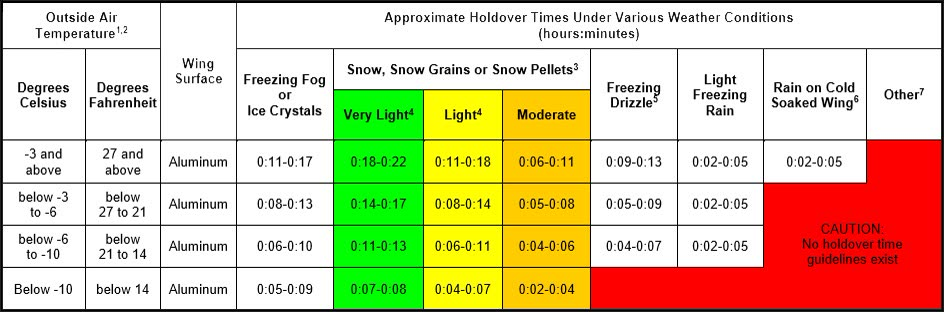

Lesson 08: Holdover Times and Allowance Times
Learning objectives
- Define holdover time and explain its limits.
- Use holdover time guidelines correctly, step by step.
- Explain allowance times for ice pellets and small hail, and the factors that shorten protection.

Definition
Holdover time (HOT) is the estimated time for which an anti-icing fluid will prevent frost or ice from forming and snow from accumulating on the treated surfaces of an aircraft. It starts at the beginning of the final application of fluid and ends when the fluid is expected to lose its effectiveness (fluid failure).
HOT guidelines are published each winter season by the FAA and Transport Canada and are used worldwide. The Domestic Airlines Operations Manual states which tables crews must use. Tables change every year, so always use the current season's tables.
Tables are based on tests in controlled conditions. Heavy precipitation, high moisture content, strong wind, jet blast, and an aircraft skin colder than the air all shorten the real protection time. If the surfaces show signs of contamination, the aircraft is not clean, however much holdover time remains.
Using the tables — step by step
- Identify the fluid from the anti-icing code: type, brand if known, and concentration (e.g. Type IV, 100/0).
- Select the correct table — brand-specific if the fluid is known, otherwise the generic table for that type.
- Find the OAT row. Use the outside air temperature, and check it is not below the fluid's LOUT.
- Find the precipitation column — frost, freezing fog, snow/snow grains, freezing drizzle, light freezing rain, rain on a cold-soaked wing. Assess snow intensity from the snowfall intensity as a function of visibility table, not just from the METAR.
- Read the time range. The shorter value applies to the heavier end of that intensity category, the longer value to the lighter end. Use the shorter time when conditions are at the heavier end or uncertain.
- Note the start time from the anti-icing code and calculate when the HOT ends. Write it down and brief it.
- Keep reassessing. If the precipitation type or intensity changes, recalculate. If no HOT exists for the new conditions, the aircraft must return for treatment.
When holdover time is exceeded
If the HOT has run out before take-off, take-off is only permitted if a pre-take-off contamination check shows the critical surfaces are clean, carried out within 5 minutes before beginning the take-off (Lesson 13). Otherwise the aircraft must be re-treated.
Allowance times
In ice pellets and small hail, and mixes of these with other precipitation, fluid failure is difficult to see. Instead of holdover times, the tables give allowance times for specific Type III and Type IV fluids. Allowance times:
- start at the beginning of the final application, like a HOT;
- cannot be extended by a pre-take-off contamination check — when the allowance time is exceeded, the aircraft must be re-treated;
- may carry extra restrictions, such as maximum rotation speed or limits on flap configuration.
Conditions with no holdover time
No HOT guidelines exist for moderate or heavy freezing rain, hail, or heavy ice pellets. Take-off in these conditions is generally not authorised. Check the Operations Manual for heavy snow, which has guidelines for some fluids only.
Key takeaways
- HOT starts at the beginning of the final application and is only an estimate.
- Use the current season's tables, the correct fluid and concentration, OAT and precipitation type/intensity.
- HOT exceeded → pre-take-off contamination check within 5 minutes of take-off, or re-treat.
- Allowance times (ice pellets, small hail) cannot be extended — re-treat when they expire.
Knowledge check
An allowance time for ice pellets has expired while you hold for take-off. What is the correct action?